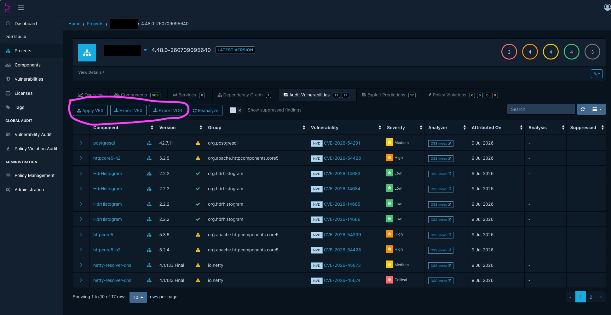
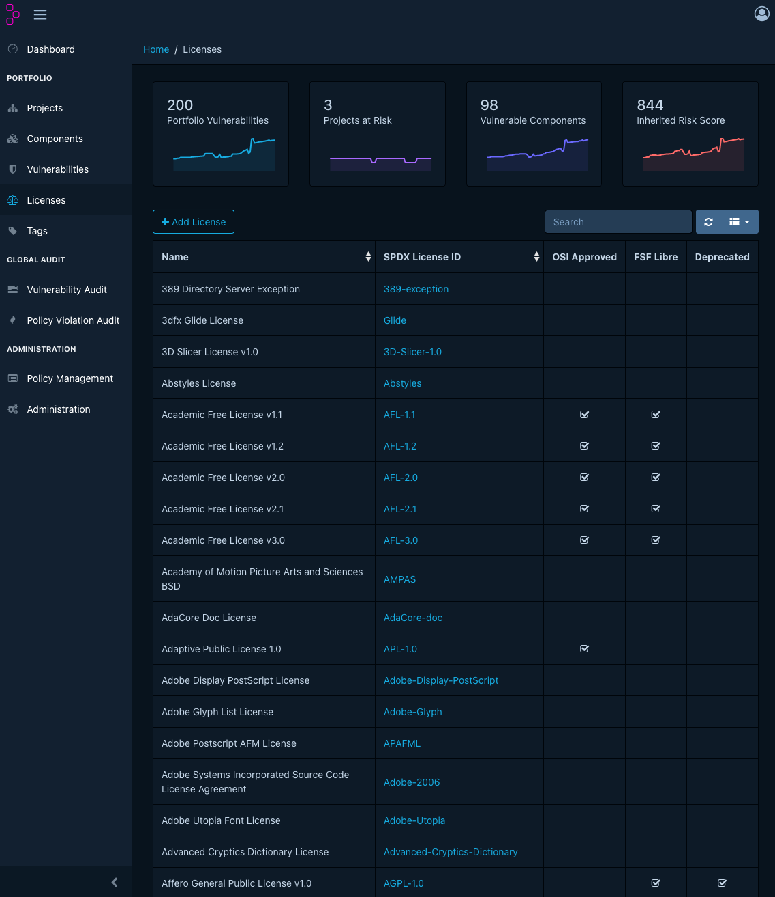
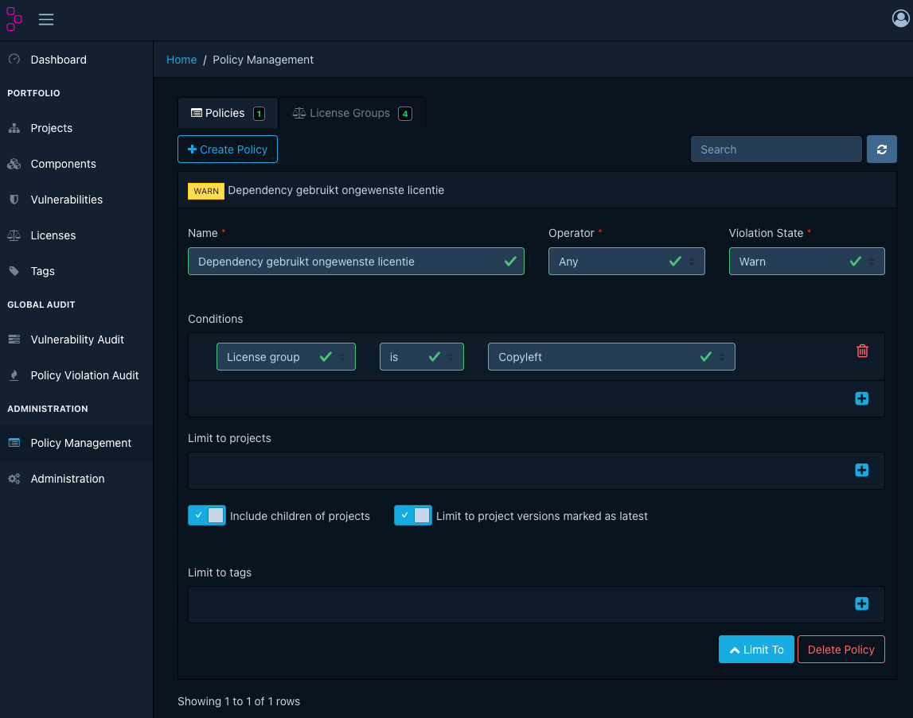

Introductie Toolgids
Voor de softwareontwikkeling adviseert ICTU specifieke tools die de softwarekwaliteit controleren. Zie M16: Het project gebruikt tools voor vastgestelde taken.
Alle tools hebben eigen documentatie online. Voor sommige tools is deze online documentatie niet toereikend. Deze toolgids biedt praktische handleidingen, stappenplannen, verdiepingen en referenties, ter aanvulling op de officiële documentatie.
Heb je een verbetersuggestie? Dien een issue in via https://github.com/ICTU/Kwaliteitsaanpak/issues/new of volg de instructies op de readme-pagina om zelf bij te dragen.
Dependency-Track
Deze toolgids geeft achtergrondinformatie bij het gebruik van Dependency-Track binnen softwareontwikkelprojecten. De pagina is bedoeld als aanvulling op de officiële Dependency-Track-documentatie.
Dependency-Track Verdieping en Begrippen
Dependency-Track algemeen
Dependency-Track is een open-source tool die de softwarecompositie analyseert van softwareontwikkelprojecten.
Het inventariseert projecten en scant de componenten periodiek op kwetsbaarheden, losstaand van de pipeline.
Dependency-Track is een applicatie die een SBoM ontvangt en securitydatabase(s) periodiek bevraagt, om te bepalen of componenten in de SBoM kwetsbaarheden bevatten.
In een SBoM kunnen zowel container images als softwarebibliotheken worden opgenomen.
Ook al lijken de namen sterk op elkaar, deze tool moet niet verward worden met de onderstaande vergelijkbare tool Dependency-Check.
Ze hebben overlap maar ook verschillen.
Geschiedenis en achtergrond
Dependency-Track is een OWASP-project bedacht door Steve Springett.
Volgens de OWASP-projectpagina bestaat Dependency-Track sinds 2013 en is het ontwikkeld om Bill(s) of Materials te analyseren op cybersecurity-risico's.
Dependency-Track is een OWASP Flagship Project en wordt ontwikkeld door een internationale groep vrijwilligers.
De software valt onder de Apache 2.0-licentie.
Dependency-Track is nauw verbonden met CycloneDX, tevens een OWASP-project.
CycloneDX is een standaard voor Bill(s) of Materials en wordt eveneens binnen de OWASP-context gebruikt.
Dependency-Track consumeert en produceert CycloneDX SBoM's en CycloneDX VEX-documenten.
Bronnen:
- https://www.owasp.community/projects/dependency-track
- https://owasp.org/www-project-dependency-track/
- https://cyclonedx.org/
- https://docs.dependencytrack.org/
Waarvoor gebruik je Dependency-Track?
Dependency-Track wordt vooral gebruikt voor continue software supply chain monitoring.
- inzicht krijgen in gebruikte softwarecomponenten;
- kwetsbare componenten vinden;
- bepalen welke projecten geraakt worden door een specifieke kwetsbaarheid;
- licentierisico's zichtbaar maken;
- policies afdwingen op security, licenties en operationele risico's;
- auditbeslissingen vastleggen over kwetsbaarheden;
- SBoM's en VEX-informatie gebruiken in beheer, releaseprocessen en leveranciersmanagement.
Dependency-Track is vooral nuttig wanneer meerdere applicaties, teams of leveranciers centraal bewaakt moeten worden.
Voor één losse build kan een pipeline-scanner voldoende lijken, maar voor portfoliobreed inzicht is een centrale SBoM-gebaseerde applicatie beter geschikt.
Wat doet Dependency-Track niet?
Dependency-Track is geen vervanging voor alle securitytesting.
Dependency-Track doet niet automatisch het volgende:
- broncode analyseren zoals een SAST-tool;
- draaiende applicaties testen zoals een DAST-tool;
- containers of images zelf bouwen;
- dependencies automatisch updaten;
- beoordelen of een kwetsbaarheid daadwerkelijk misbruikt kan worden in de specifieke applicatiecontext;
- bepalen of een licentie juridisch acceptabel is voor jouw organisatie.
Dependency-Track levert signalen, bevindingen en beleidsondersteuning.
De beoordeling en opvolging blijven onderdeel van het ontwikkel-, beheer- en securityproces.
Verschil met vergelijkbare tools
Dependency-Track wordt regelmatig verward met andere tools.
De namen lijken soms op elkaar, maar het doel verschilt.
| Tool of standaard | Wat is het? | Belangrijk verschil |
|---|---|---|
| Dependency-Track | Platform voor SBoM-analyse en continue monitoring | Bewaart SBoM's en monitort projecten centraal over tijd |
| Dependency-Check | SCA-tool die projectdependencies onderzoekt op bekende kwetsbaarheden | Draait meestal als CLI, build-plugin of pipeline-stap |
| CycloneDX | Standaard voor Bills of Materials | Is geen dashboard of vulnerability management platform, maar een formaat en ecosysteem |
| SBoM-generator | Tool die een SBoM maakt | Genereert input voor Dependency-Track, maar bewaakt de portfolio niet zelf |
Dependency-Check probeert kwetsbaarheden in projectdependencies te detecteren en koppelt dependencies onder meer aan CPE's en CVE's.
Dependency-Track werkt anders: het gebruikt SBoM's als centrale input en bewaakt componentgebruik over projecten en versies heen.
Bronnen:
- https://owasp.org/www-project-dependency-check/
- https://docs.dependencytrack.org/odt-odc-comparison/
- https://cyclonedx.org/
Belangrijkste kenmerken
Dependency-Track heeft onder meer de volgende kenmerken:
- open-source;
- OWASP Flagship Project;
- standalone platform met webinterface en API;
- geschikt voor integratie met CI/CD;
- gebruikt SBoM's als centrale bron;
- ondersteunt CycloneDX SBoM en CycloneDX VEX;
- bewaakt componentgebruik over projecten en versies heen;
- ondersteunt componenten zoals libraries, containers, operating systems, firmware, hardware en services;
- analyseert bekende kwetsbaarheden;
- ondersteunt licentiebeleid;
- ondersteunt security-, operational- en license policies;
- kan kwetsbaarheidsbronnen zoals NVD, GitHub Advisories en OSV gebruiken;
- ondersteunt prioritering met EPSS;
- biedt mogelijkheden voor audit, triage en rapportage.
Bronnen:
- https://dependencytrack.org/
- https://docs.dependencytrack.org/
- https://owasp.org/www-project-dependency-track/
- https://dependencytrack.github.io/docs/next/guides/administration/configuring-vulnerability-sources/
Begrippen
SBoM
SBoM staat voor Software Bill of Materials en is te vergelijken met aan pakbon uit de logistiek.
Een SBoM is een overzicht van componenten, bibliotheken en andere softwareonderdelen die in een applicatie of systeem worden gebruikt.
Een goede SBoM bevat bij voorkeur minimaal:
- componentnaam;
- versie;
- leverancier of auteur;
- dependency-relaties;
- package URL of andere identifier;
- licentie-informatie;
- hashes;
- metadata over de applicatie of het product waarvoor de SBoM is gemaakt.
In de Kwaliteitsaanpak is het gebruik van tools en het genereren van een SBoM een maatregel.
⚠️ Let op
Dependency-Track hanteert de naam project voor de verzameling van dezelfde SBoM's die alleen verschillen in versie.
Dit kan tot verwarring leiden.
Je kunt bijvoorbeeld voor iedere release een SBoM genereren van de front-end en de back-end van je project.
Dependency-Track ziet dit dan als twee losse 'projects'.
Project
In Dependency-Track is een project de administratieve eenheid waaronder componenten, versies, bevindingen, policies en metrics worden geregistreerd.
Een project in Dependency-Track is dus niet altijd hetzelfde als een Jira-project, Git-repository of softwareontwikkelproject.
In de praktijk komt een Dependency-Track-project vaak overeen met een applicatie, service, component of releasebaar product.
Let op: zeg niet dat Dependency-Track "een SBoM een project noemt". Nauwkeuriger is:
> Dependency-Track beheert projecten en projectversies. Een SBoM wordt geüpload naar een project of projectversie en beschrijft de componenten daarvan.
Dit onderscheid voorkomt verwarring. Een project kan meerdere versies hebben, en per versie kan een nieuwe SBoM worden aangeleverd.
Bronnen:
- https://dependencytrack.org/
- https://docs.dependencytrack.org/
Dependency
Softwareontwikkelprojecten gebruiken extern softwarepakketten (ook wel bibliotheken of libraries) om bepaalde generieke functionaliteit niet zelf te hoeven bouwen, denk bijvoorbeeld aan een log-functionaliteit.
Omdat de software afhankelijk is van deze software worden het, in de context van een softwareontwikkelproject, dependencies genoemd.
In Dependency-Track wordt de term component hiervoor gebruikt.
Directe en transitieve dependencies
Een directe dependency is een dependency die het project zelf expliciet declareert.
Een transitieve dependency is een dependency die indirect wordt binnengehaald door een andere dependency.
Voorbeeld:
Applicatie
└── Library A
└── Library B
In dit voorbeeld gebruikt de applicatie Library A direct. Library B is transitief, omdat deze via Library A wordt meegenomen.
Transitieve dependencies zijn belangrijk, omdat kwetsbaarheden vaak niet in de expliciet gekozen library zitten, maar dieper in de dependency-boom.
Component
Een component is een software- of systeemonderdeel dat in een SBoM voorkomt en door Dependency-Track wordt geanalyseerd.
Een component kan bijvoorbeeld zijn:
- een library;
- een framework;
- een container-image;
- een operating system package;
- firmware;
- een bestand;
- een service;
- hardware.
De term component is breder dan dependency.
Elke dependency is meestal een component, maar niet elk component hoeft in de klassieke zin een library-dependency te zijn.
Bron:
- https://docs.dependencytrack.org/
CycloneDX
CycloneDX is een Bill of Materials-standaard.
Dependency-Track gebruikt CycloneDX als belangrijk formaat voor SBoM's en VEX-documenten.
CycloneDX ondersteunt meer dan alleen softwarebibliotheken.
Het kan ook informatie bevatten over onder meer services, hardware, cryptografie, vulnerabilities en licenties.
Voor Dependency-Track-projecten is CycloneDX het voorkeursformaat voor SBoM's.
Bronnen:
- https://cyclonedx.org/
- https://dependencytrack.github.io/docs/next/reference/file-formats/
- https://docs.dependencytrack.org/
CVE
Openbare softwarepakketten worden continue onderzocht op kwetsbaarheden in de beveiliging.
Deze kwestbaarheden worden CVE's genoemd.
Dit staat voor Common Vulnerabilities and Exposures.
Deze ontdekte kwetsbaarheden worden opgeslagen in databases die kunnen worden geraadpleegd.
Zo kunnen softwareontwikkelprojecten weten of de dependencies die gebruikt worden, veilig zijn.
Een CVE krijgt een unieke identifier, bijvoorbeeld:
CVE-2021-44228
Dit voorbeeld verwijst naar de bekende Log4Shell-kwetsbaarheid in Apache Log4j.
Een CVE is vooral een gestandaardiseerde verwijzing, de inhoud van een CVE zelf bevat meestal maar beperkte informatie.
Extra details, zoals ernstscore, getroffen versies en verrijkte metadata, komen vaak uit andere bronnen zoals NVD, GitHub Advisories en/of OSV.
Bronnen:
- https://www.cve.org/
- https://nvd.nist.gov/
NVD
NVD staat voor National Vulnerability Database.
Dit is de Amerikaanse overheidsdatabase van NIST voor kwetsbaarheidsmanagementdata.
NVD gebruikt CVE's als basis en verrijkt die met aanvullende informatie, zoals:
- CVSS-scores;
- CPE-koppelingen;
- impactinformatie;
- referenties;
- metadata over getroffen producten.
Voor Dependency-Track is de NVD een belangrijke bron, maar niet de enige bron.
Let op dat de NVD vooral goed werkt wanneer componenten correct gekoppeld kunnen worden aan CPE's.
Bronnen:
- https://nvd.nist.gov/
- https://dependencytrack.github.io/docs/next/guides/administration/configuring-vulnerability-sources/
GitHub Advisories
GitHub Advisories is een database met security advisories voor open-source dependencies.
Deze bron is vooral relevant voor package-ecosystemen zoals Maven, npm, NuGet, PyPI en vergelijkbare repositories.
Dependency-Track kan GitHub Advisories gebruiken als vulnerability source.
Voor Dependency-Track v5 is hiervoor een GitHub personal access token nodig.
Volgens de officiële documentatie zijn geen scopes nodig, maar de GitHub GraphQL API accepteert geen unauthenticated requests.
Bron:
- https://dependencytrack.github.io/docs/next/guides/administration/configuring-vulnerability-sources/
OSV
OSV staat voor Open Source Vulnerabilities.
OSV is een kwetsbaarheidsdatabase van Google, die zich richt op open-source ecosystemen en package-identifiers zoals PURL.
Dependency-Track kan OSV gebruiken als vulnerability source.
In Dependency-Track v5 kan per ecosysteem worden gekozen welke OSV-data gesynchroniseerd (mirror) wordt.
Ecosystemen zijn doorgaans gedefinieerd op programmeertaal of operating systeem.
Bronnen:
- https://osv.dev/
- https://dependencytrack.github.io/docs/next/guides/administration/configuring-vulnerability-sources/
Vulnerability source
Een vulnerability source is een bron waaruit Dependency-Track kwetsbaarheidsinformatie haalt.
Dependency-Track gebruikt die informatie om componenten uit SBoM's te koppelen aan bekende kwetsbaarheden.
Voor Dependency-Track v5 beschrijft de officiële configuratiedocumentatie drie publieke bronnen die gesynchroniseerd (mirror) kunnen worden:
- NVD;
- GitHub Advisories;
- OSV.
Let op: algemene of oudere Dependency-Track-documentatie noemt soms ook bronnen zoals Sonatype OSS Index, Snyk, Trivy of VulnDB.
Controleer altijd de documentatie van de gebruikte Dependency-Track-versie en de actuele configuratie van de eigen omgeving.
Bronnen:
- https://dependencytrack.github.io/docs/next/guides/administration/configuring-vulnerability-sources/
- https://docs.dependencytrack.org/
CVSS
CVSS staat voor Common Vulnerability Scoring System.
CVSS geeft een numerieke score aan de technische ernst van een kwetsbaarheid.
De score loopt van 0,0 tot 10,0 en wordt vaak vertaald naar categorieën zoals low, medium, high en critical.
Belangrijk: CVSS is een maat voor ernst, niet automatisch voor risico.
Een kwetsbaarheid met een hoge CVSS-score is technisch ernstig, maar dat betekent niet altijd dat deze in jouw context te misbruiken is.
Omgekeerd kan een kwetsbaarheid met een lagere score toch belangrijk zijn als deze actief wordt misbruikt.
Bronnen:
- https://www.first.org/cvss/
- https://nvd.nist.gov/vuln-metrics/cvss
PURL
PURL staat voor Package-URL. Een PURL is een gestandaardiseerde manier om softwarepackages te identificeren over package-ecosystemen heen.
Voorbeelden:
pkg:maven/org.apache.logging.log4j/log4j-core@2.14.1
pkg:npm/lodash@4.17.21
pkg:pypi/requests@2.32.3
pkg:nuget/Newtonsoft.Json@13.0.3
Voor SBoM-gebaseerde analyse is PURL belangrijk, omdat tools zoals Dependency-Track componenten daarmee beter kunnen koppelen aan package-ecosystemen en kwetsbaarheidsbronnen zoals GitHub Advisories en OSV.
Bronnen:
- https://www.packageurl.org/
- https://github.com/package-url/purl-spec
- https://dependencytrack.github.io/docs/next/guides/administration/configuring-vulnerability-sources/
Licentie
Een licentie bepaalt onder welke voorwaarden een softwarecomponent gebruikt, verspreid of aangepast mag worden.
Voorbeelden van bekende open-sourcelicenties:
- MIT;
- Apache-2.0;
- BSD-3-Clause;
- GPL-3.0-only;
- LGPL-2.1-or-later.
Dependency-Track kan licentie-informatie uit componenten gebruiken voor licentiebeleid. Het is verstandig om licenties zo veel mogelijk vast te leggen met SPDX License Identifiers.
Bronnen:
- https://spdx.org/licenses/
- https://dependencytrack.github.io/docs/next/guides/user/managing-component-policies/
Policy
Een policy is een regel waarmee Dependency-Track kan bepalen of een component, vulnerability of licentie voldoet aan de afspraken van de organisatie.
Voorbeelden:
- geen componenten met kritieke kwetsbaarheden;
- geen dependencies met verboden licenties;
- onbekende licenties moeten handmatig beoordeeld worden;
- componenten zonder recente release moeten worden onderzocht;
- bepaalde projecten moeten voldoen aan strengere regels.
Policies helpen om afspraken expliciet en toetsbaar te maken. Zonder policies blijft Dependency-Track vooral een signaleringstool. Met policies wordt het ook een governance-instrument.
Bronnen:
- https://dependencytrack.github.io/docs/next/guides/user/managing-component-policies/
- https://dependencytrack.github.io/docs/next/reference/policies/component-policies/
VEX
VEX staat voor Vulnerability Exploitability Exchange. Een VEX-document legt vast of een bekende kwetsbaarheid daadwerkelijk relevant of te misbruiken is in een specifieke productcontext.
Een component kan bijvoorbeeld technisch kwetsbaar zijn, maar de kwetsbare functionaliteit wordt niet aangeroepen.
In dat geval kan een VEX-status helpen om het verschil vast te leggen tussen:
- kwetsbaar component aanwezig;
- kwetsbaarheid werkelijk te misbruiken;
- kwetsbaarheid niet relevant;
- analyse nog niet afgerond.
Bronnen:
- https://cyclonedx.org/capabilities/vex/
- https://docs.dependencytrack.org/
VDR
VDR staat voor Vulnerability Disclosure Report. Een VDR bevat kwetsbaarheidsinformatie over componenten in een product of project.
Noem een VDR niet simpelweg een "annotated SBoM", dat is te onnauwkeurig. Een betere formulering is:
> Een VDR is een CycloneDX-document met kwetsbaarheidsinformatie over componenten in een product of project.
Bron:
- https://cyclonedx.org/use-cases/vulnerability-disclosure/
VDR- en VEX-export uit Dependency-Track
Context
Dependency-Track kan naast SBoM's ook CycloneDX-documenten genereren met kwetsbaarheidsinformatie.
Belangrijke termen:
| Term | Betekenis | Meer uitleg |
|---|---|---|
| SBoM | Software Bill of Materials, de componentinventaris | Uitleg begrip SBoM |
| VEX | Vulnerability Exploitability Exchange | Uitleg begrip VEX |
| VDR | Vulnerability Disclosure Report | Uitleg begrip VDR |
Toelichting
Een VEX-document beschrijft analysebeslissingen over kwetsbaarheden.
Het geeft bijvoorbeeld context over de vraag of een kwetsbaarheid exploiteerbaar is in een specifieke toepassing.
Een VDR-document bevat kwetsbaarheidsinformatie over componenten in een product of project.
In een SBoM van een project is het mogelijk om commentaar achter te laten per component.
Dit kan bijvoorbeeld zijn: "deze CVE vormt geen risico op productie omdat het testtooling is".
Dependency-Track biedt tevens de mogelijkheid om deze SBoM te exporteren:

Bronnen
- Dependency-Track v5, File Formats:
https://dependencytrack.github.io/docs/next/reference/file-formats/
https://cyclonedx.org/use-cases/vulnerability-disclosure/
https://cyclonedx.org/capabilities/vex/
Bekende problemen en oplossingen
De SBoM wordt eenmalig gescand
Na het uploaden van een SBoM verschijnen er resultaten, maar een dag later lijken nieuwe kwetsbaarheden niet automatisch zichtbaar te worden.
Het project lijkt daardoor alleen tijdens de eerste upload te zijn geanalyseerd.
De bedoeling van Dependency-Track is dat een SBoM wordt gemonitord en dus op dagelijkse basis wordt gescand.
Context
Dependency-Track is een tool die per project bewaakt welke externe softwarepakketten kwetsbaarheden bevatten.
Dependency-Track doet dit via achtergrondtaken. Daarbij zijn drie stappen belangrijk:
- Kwetsbaarheidsbronnen worden gesynchroniseerd (mirror) naar de lokale Dependency-Track-database;
- Componenten uit projecten worden geanalyseerd tegen die lokale kwetsbaarheidsdata;
- Metrics en dashboardwaarden worden bijgewerkt.
Waarschijnlijke oorzaken
Mogelijke oorzaken zijn:
- De geplande 'portfolio vulnerability analysis' draait niet
- De 'task scheduler' is uitgeschakeld of verkeerd geconfigureerd
- De kwetsbaarheidsbronnen zijn niet ingeschakeld of nog niet gesynchroniseerd (mirror)
- De cronconfiguratie voor de portfolio vulnerability analysis is aangepast of foutief ingesteld
- De gebruiker verwart de metrics-refresh of grafiekupdate met een vulnerability analysis
Oplossing
⚠️ Let op: De gesuggereerde oplossingen hieronder kunnen niet worden aangepast in de webinterface.
Ze horen bij de deploymentconfiguratie van de Dependency-Track API-server.
In de praktijk moeten deze instellingen worden gecontroleerd of aangepast door een systeembeheerder, platformbeheerder of DevOps-beheerder met toegang tot de runtimeconfiguratie van de API-server.
Controleer of de geplande analyse actief is
Zoals uitgelegd in de documentatie van Dependency-Track kunnen configuraties op verschillende manieren worden toegepast.
Ze kunnen onder meer via de JVM-opstartparameters en via de 'environment variables' worden aangepast.
Dependency-Track v5 gebruikt een task scheduler voor terugkerende achtergrondtaken.
Deze scheduler start onder meer taken voor het synchroniseren (mirror) van kwetsbaarheidsbronnen, metrics-updates en portfolio vulnerability analysis.
De portfolio vulnerability analysis is de taak die alle componenten in de portfolio opnieuw analyseert tegen de beschikbare kwetsbaarheidsdata.
Voor Dependency-Track v5 zijn met name deze instellingen relevant:
dt.task-scheduler.enabled=true
dt.task.portfolio-analysis.cron=0 6 * * *
Bij een container- of Kubernetes-deployment worden deze waarden meestal als environment variables op de API-servercontainer gezet:
DT_TASK_SCHEDULER_ENABLED=true
DT_TASK_PORTFOLIO_ANALYSIS_CRON=0 6 * * *
De standaardwaarde 0 6 * betekent dat de portfolio vulnerability analysis dagelijks om 06:00 UTC draait.
⚠️ Let op: Dependency-Track gebruikt voor deze cron-expressies UTC, niet de lokale tijdzone.
Deze configuratie kan op verschillende manieren worden toegepast, afhankelijk van de deployment:
| Deploymentvorm | Waar aanpassen? |
|---|---|
| Docker Compose | In de environment-sectie van de Dependency-Track API-serverservice |
| Kubernetes | In de env-sectie van de API-server Deployment of StatefulSet |
| Helm | In de Helm values die environment variables voor de API-server instellen |
| JVM-startparameter | Als -Ddt.task-scheduler.enabled=true en -Ddt.task.portfolio-analysis.cron="0 6 *" |
| Configuratiebestand | In config/application.properties van de API-server |
Bij gebruik van het officiële container-image is de current working directory /opt/owasp/dependency-track.
Een configuratiebestand wordt dan verwacht op:
/opt/owasp/dependency-track/config/application.properties
Voorbeeldinhoud:
dt.task-scheduler.enabled=true
dt.task.portfolio-analysis.cron=0 6 * * *
Let op bij meerdere API-servernodes: de scheduler mag op meerdere nodes actief zijn.
Dependency-Track coördineert de uitvoering via de database, zodat een geplande taak maar door één node wordt uitgevoerd.
De scheduler moet echter wel op minimaal één API-servernode actief zijn.
Als de scheduler op alle nodes is uitgeschakeld, draaien de geplande achtergrondtaken niet.
Controleer na wijziging van deze instellingen de API-serverlogs om vast te stellen of de scheduler actief wordt en of de portfolio vulnerability analysis daadwerkelijk wordt gestart.
Controleer de vulnerability sources
De beheerder moet controleren of de kwetsbaarheidsbronnen correct zijn ingericht. Ga in Dependency-Track naar:
Administration > Vulnerability Sources
Controleer minimaal:
- NVD
- GitHub Advisories
- OSV
Na het inschakelen van een bron moet de eerste synchronisatie (mirror) uitgevoerd worden. Gebruik daarvoor, indien beschikbaar in de interface:
Mirror now
Let daarbij op het type identifier dat per bron nodig is:
| Bron | Belangrijke identifier |
|---|---|
| NVD | CPE |
| GitHub Advisories | PURL |
| OSV | PURL |
Controleer, voor de zekerheid, ook de SBoM zelf. Voor open-source dependencies is een Package URL, kortweg PURL, meestal essentieel. Voorbeelden:
pkg:maven/org.apache.commons/commons-lang3@3.14.0
pkg:npm/lodash@4.17.21
pkg:pypi/requests@2.32.3
Als de SBoM geen PURL of CPE bevat, kan Dependency-Track de component mogelijk wel tonen, maar kwetsbaarheden minder goed of helemaal niet relateren aan een kwetsbaarhedendatabase.
⚠️ Let op: Let ook op het verschil tussen analyse en metriek.
Een grafiek of dashboardwaarde die wordt bijgewerkt, betekent niet automatisch dat de vulnerabilities opnieuw zijn geanalyseerd.
Controleer (of laat een systeembeheerder controleren) daarom bij twijfel de Dependency-Track API-serverlogs en de timestamps van de analyse.
Dependency-Track gebruikt meerdere achtergrondtaken die los van elkaar kunnen worden uitgevoerd.
Kwetsbaarheidsbronnen zoals NVD, GitHub Advisories en OSV worden periodiek gesynchroniseerd (mirror).
Daarnaast draait er een 'portfolio vulnerability analysis' die componenten opnieuw vergelijkt met de beschikbare kwetsbaarheidsdata.
Daarna worden metrics (grafieken- en dashboardwaardes) periodiek bijgewerkt.
Door de 'portfolio vulnerability analysis' kan een grafiek- of dashboardwaarde veranderen zonder dat er op dat moment een nieuwe SBoM is geüpload.
Een grafiek toont meestal een metrics-snapshot: een vastgelegde stand van onder meer vulnerabilities, findings, suppressions, auditstatus en policy violations op een bepaald moment.
Controleer (of laat een systeembeheerder dit doen) bij twijfel daarom niet alleen de grafiek, maar ook:
- de timestamp van de laatste SBoM-import;
- de timestamp van de laatste vulnerability analysis;
- de configuratie van de task scheduler;
- de ingestelde vulnerability sources;
- of findings actief, inactive of suppressed zijn;
- de API-serverlogs wanneer je wilt vaststellen of een specifieke achtergrondtaak daadwerkelijk heeft gedraaid.
Bronnen
- Dependency-Track v5, Task Scheduler:
https://dependencytrack.github.io/docs/next/reference/configuration/task-scheduler/
https://dependencytrack.github.io/docs/next/guides/administration/configuring-vulnerability-sources/
https://dependencytrack.github.io/docs/next/reference/analyzers/
Geen duidelijk inzicht in gebruikte licenties
Het projectteam wil inzichtelijk maken welke licenties worden gebruikt in dependencies, maar het overzicht is onvolledig, onduidelijk of niet geschikt voor besluitvorming.

Context
Dependency-Track kan per component licentie-informatie registreren en toetsen. Die informatie komt meestal uit de SBoM.
Als de SBoM geen of onvolledige licentiegegevens bevat, kan Dependency-Track deze informatie ook niet betrouwbaar tonen of beoordelen.
Licentie-inzicht bestaat uit twee verschillende vragen:
- Welke licenties worden gebruikt in dit project?
- Welke gebruikte licenties zijn toegestaan, ongewenst of onbekend?
De eerste vraag is inventariserend. De tweede vraag is een beleidsvraag en is afhankelijk van de niet-functionele eisen van het ontwikkelproject.
Het toepassen van dit beleid kan middels policies zoals hieronder verder uitgediept.
Softwareontwikkelprojecten kunnen onbedoeld softwarepakketten (dependencies) gebruiken met licenties die niet passen bij het beleid van de organisatie of het project.
Vooral copyleftlicenties vragen aandacht.
Copyleftlicenties verplichten, onder bepaalde voorwaarden, dat gewijzigde of afgeleide software onder dezelfde of vergelijkbare licentie beschikbaar wordt gesteld.
De meest risicovolle categorieën zijn:
- sterke copyleftlicenties, zoals GPL-2.0 en GPL-3.0;
- netwerkcopyleftlicenties, zoals AGPL-3.0, vooral relevant voor SaaS- en webapplicaties;
- zwakke copyleftlicenties, zoals LGPL, MPL en EPL, die meestal beperkter werken, maar nog steeds voorwaarden kunnen opleggen;
- niet-open-source restrictieve licenties, zoals proprietary, source-available, non-commercial en no-derivatives-licenties.
In Dependency-Track is het mogelijk om deze licenties niet alleen te inventariseren, maar ook via licentiebeleid te classificeren als toegestaan, review vereist of niet toegestaan.
Verkeerde verwachtingen bij de licenses-pagina
Een veelvoorkomende oorzaak is dat gebruikers verwachten dat onder /licenses is terug te vinden welke softwarepakketten ongewenste licenties bevatten. Dit is niet het geval.
De licenses-pagina geeft een overzicht van alle licenties die bekend zijn bij deze instantie van Dependency-Track, aangevuld met classificaties (de kolommen OSI approved, FSF Libre en Deprecated).
| Kolomnaam | Betekenis |
|---|---|
| OSI approved | OSI-goedgekeurde licenties voldoen aan de Open Source Definition, wat in hoofdlijnen betekent dat software vrij gebruikt, aangepast en gedeeld mag worden. |
| FSF Libre | Geeft aan of de Free Software Foundation de licentie als vrije softwarelicentie beschouwt. "Libre" gaat hier over vrijheid, niet over gratis gebruik. |
| Deprecated | Geeft aan of de SPDX identifier van de licentie verouderd is. Dit betekent niet dat de licentie zelf ongeldig is. Het betekent dat SPDX het gebruik van deze identifier afraadt, meestal omdat er een betere of explicietere identifier bestaat. |
Oplossing: Verkrijgen van het gewenste inzicht
Om inzicht te krijgen in de gebruikte ongewenste licenties van een project moet er eerst een licentiebeleid ('policy') worden geconfigureerd.
Dit wordt uitgelegd in de Dependency-Track documentatie. Dit kan worden gedaan op de pagina 'Policy Management'.
De eenvoudige manier is om gebruik te maken van de bestaande classificaties (licence group) van Dependency-Track.
Bij een sterk juridisch belang of organisatorisch beleid wordt het aanbevolen om handmatig een license-group aan te maken en daarin op te nemen welke licenties niet acceptabel zijn.
Stap 1: Zelf configureren van een license group (optioneel)
Ga naar:
Policy Management > License Groups
Maak bijvoorbeeld deze groepen aan:
| License group | Doel |
|---|---|
| Toegestane licenties | Licenties die binnen de organisatie standaard zijn toegestaan |
| Verboden licenties | Licenties die niet gebruikt mogen worden |
| Review vereist | Licenties die handmatige beoordeling vereisen |
Stap 2: Maak een policy aan
Maak vervolgens component policies aan via:
Policy Management > Policies

Policy: verboden licenties blokkeren (ingebouwde license group)
Name: Dependency gebruikt ongewenste licentie
Operator: Any
Violation state: Warn
Condition: License group is Copyleft
Limit to
Include children of projects: yes
Limit to project versions marked as latest: yes
Belangrijke nuance: welke dependency moet vervangen worden?
Dependency-Track toont de component die de policy overtreedt.
Dat is niet automatisch de dependency die je in pom.xml, package.json, build.gradle of een ander dependency-bestand moet vervangen.
Voorbeeld:
jouw applicatie
└── directe dependency A
└── transitieve dependency B met GPL-licentie
In dit geval is B de component met de ongewenste licentie.
Maar de dependency die je waarschijnlijk moet vervangen of uitsluiten is A, omdat A de transitieve dependency B binnenhaalt.
Dependency-Track v5 heeft de mogelijkheid om dependency-relaties te evalueren via policy expressions.
De documentatie noemt functies zoals isdependencyof, isdirectdependency_of en isexclusivedependency_of.
Daarmee kun je bepalen of een component direct, transitief of exclusief via een andere component wordt binnengehaald.
ℹ️ Licenties van transitieve dependencies
Dependency-Track kan alleen informatie verschaffen over WELKE softwarepakketten (dependencies) ongewenste licenties bevatten.
Daarna moet het ontwikkelteam in de dependency tree van de gebruikte package manager bepalen welke directe dependency de transitieve component binnenhaalt.
Licenties worden niet weergegeven
Waarschijnlijke oorzaken
Mogelijke oorzaken zijn:
- De SBoM-generator neemt geen licentiegegevens op
- Licenties worden niet als SPDX License Identifier vastgelegd
- Sommige dependencies hebben geen eenduidige licentie
- Er is geen licentiebeleid ingericht in Dependency-Track
- Er zijn geen license groups of component policies geconfigureerd
- Onbekende licenties worden niet apart bewaakt
Oplossing
Begin bij de bron: de SBoM moet licentie-informatie bevatten.
Zorg dat de SBoM-generator deze informatie toevoegt aan de SBoM.
Gebruik waar mogelijk SPDX License Identifiers, bijvoorbeeld:
MIT
Apache-2.0
BSD-3-Clause
GPL-3.0-only
LGPL-2.1-or-later
Gebruik bij samengestelde of alternatieve licenties een SPDX expression, bijvoorbeeld:
MIT OR Apache-2.0
Bronnen
- Dependency-Track v5, Managing Component Policies:
https://dependencytrack.github.io/docs/next/guides/user/managing-component-policies/
https://dependencytrack.github.io/docs/next/reference/policies/component-policies/
https://spdx.org/licenses/
Het SBoM-formaat wordt niet geaccepteerd
Context
Dependency-Track v5 ondersteunt CycloneDX als uploadformaat voor SBoM's. De ondersteunde serialisaties zijn:
| Formaat | Content type |
|---|---|
| CycloneDX JSON | application/vnd.cyclonedx+json |
| CycloneDX XML | application/vnd.cyclonedx+xml |
Dependency-Track v5 ondersteunt alle CycloneDX BOM specification versions voor upload.
Probleem
Een SBoM wordt niet geaccepteerd door Dependency-Track, of de upload lukt wel maar de inhoud wordt niet goed verwerkt.
Waarschijnlijke oorzaken
Mogelijke oorzaken zijn:
- De SBoM is geen CycloneDX-document
- De SBoM is SPDX, Syft JSON, npm audit JSON of een ander formaat
- De SBoM is CycloneDX, maar ongeldig volgens het CycloneDX-schema
- De SBoM bevat syntactische fouten
- De SBoM is geconverteerd, maar tijdens de conversie is informatie verloren gegaan
- De SBoM bevat onvoldoende metadata, zoals PURL's of licentiegegevens
Oplossing
Genereer bij voorkeur direct een CycloneDX-SBoM vanuit de build of dependency manager van het project.
Gebruik dus liever een native CycloneDX-generator dan een conversiestap achteraf.
Voorbeelden van ecosystemen waarvoor CycloneDX-tools bestaan:
| Ecosysteem | Aanpak |
|---|---|
| Maven | CycloneDX Maven-plugin |
| Gradle | CycloneDX Gradle-plugin |
| npm / Node.js | CycloneDX Node.js tooling |
| Python | CycloneDX Python tooling |
| .NET | CycloneDX .NET tooling |
| Containers | Tooling die CycloneDX als output ondersteunt |
Valideer de SBoM voordat deze naar Dependency-Track wordt gestuurd.
Voor CycloneDX JSON:
cyclonedx validate \
--input-file bom.json \
--input-format json \
--fail-on-errors
Voor CycloneDX XML:
cyclonedx validate \
--input-file bom.xml \
--input-format xml \
--fail-on-errors
Gebruik conversie alleen als tijdelijke oplossing, bijvoorbeeld wanneer een leverancier alleen SPDX JSON aanlevert.
Voorbeeld:
cyclonedx convert \
--input-file SBoM.spdx.json \
--input-format spdxjson \
--output-file bom.json \
--output-format json \
--output-version v1_6
Valideer daarna altijd het resultaat:
cyclonedx validate \
--input-file bom.json \
--input-format json \
--fail-on-errors
⚠️ Let op: conversie tussen SBoM-formaten is niet altijd verliesvrij. Controleer na conversie minimaal:
- componentnaam
- versie
- package URL
- licentie
- supplier
- hashes
- dependency-relaties
Praktisch advies
Gebruik voor Dependency-Track-projecten deze voorkeursvolgorde:
- Genereer direct CycloneDX vanuit de build
- Valideer de CycloneDX-SBoM
- Upload de gevalideerde SBoM naar Dependency-Track
- Gebruik conversie alleen als fallback
- Controleer na conversie of kritieke metadata niet verloren is gegaan
Bronnen
- Dependency-Track v5, File Formats:
https://dependencytrack.github.io/docs/next/reference/file-formats/
https://cyclonedx.org/tool-center/
https://github.com/CycloneDX/cyclonedx-cli
"Refresh requested" bij grafieken of projectmetingen
Context
Dependency-Track toont projectmetingen en grafieken, maar deze zijn niet hetzelfde als een vulnerability analysis.
Probleem
Bij een project of grafiek staat dat een refresh is aangevraagd, maar het is niet duidelijk of dit betekent dat kwetsbaarheden opnieuw worden geanalyseerd.
Uitleg
Behandel een metrics-refresh en een vulnerability analysis als twee verschillende processen.
Een metrics-refresh werkt projectmetingen of grafieken bij.
Een vulnerability analysis beoordeelt componenten tegen kwetsbaarheidsbronnen.
Als nieuwe kwetsbaarheden niet zichtbaar worden, controleer dan niet alleen de grafiek of metrics, maar ook:
- of de portfolio vulnerability analysis draait;
- of de vulnerability sources recent zijn gesychroniseerd (mirror);
- of de SBoM bruikbare identifiers bevat;
- of de API-serverlogs analyseactiviteit tonen.
Bronnen
- Dependency-Track v5, Task Scheduler:
https://dependencytrack.github.io/docs/next/reference/configuration/task-scheduler/
Referenties en Links
Deze pagina bevat een overzicht van nuttige bronnen voor wie zich verder wil verdiepen in Dependency-Track. De focus ligt op officiële documentatie, aanvullende standaarden, community-bronnen en verdiepende uitleg over SBoM’s, CycloneDX, kwetsbaarheden en licentiebeleid.
⚠️ Let op: Dependency-Track heeft documentatie voor meerdere versies. Gebruik voor nieuwe installaties en actuele informatie bij voorkeur de v5-documentatie. Gebruik de oudere documentatie alleen wanneer de gebruikte omgeving nog op Dependency-Track v4 draait.
Officiële bronnen
- Dependency-Track website
De officiële website van Dependency-Track met een algemene uitleg over het platform, de belangrijkste kenmerken en verwijzingen naar documentatie en downloads:
https://dependencytrack.org/
- Dependency-Track v5-documentatie
De actuele documentatie voor Dependency-Track v5. Deze documentatie bevat tutorials, gebruikershandleidingen, conceptuele uitleg en technische referentie-informatie:
https://dependencytrack.github.io/docs/next/
- Dependency-Track v4-documentatie
De oudere documentatie voor Dependency-Track v4. Gebruik deze alleen wanneer de gebruikte omgeving nog op v4 draait:
https://docs.dependencytrack.org/
- OWASP-projectpagina
De officiële OWASP-pagina van Dependency-Track. Hier staat onder meer de OWASP-context, projectinformatie en een overzicht van de belangrijkste kenmerken:
https://owasp.org/www-project-dependency-track/
- GitHub-repository Dependency-Track
De hoofdrepository met de broncode, releases, issues en projectinformatie:
https://github.com/DependencyTrack/dependency-track
- Dependency-Track GitHub-organisatie
Overzicht van de officiële Dependency-Track repositories, waaronder de frontend, documentatie, community-resources, Helm charts en client libraries:
https://github.com/DependencyTrack
- Quick start
Officiële tutorial om Dependency-Track lokaal te starten met Docker Compose:
https://dependencytrack.github.io/docs/next/tutorials/quickstart/
- File formats
Officiële referentiepagina over ondersteunde bestandsformaten. Belangrijk: Dependency-Track v5 ondersteunt CycloneDX als uploadformaat voor SBoM’s:
https://dependencytrack.github.io/docs/next/reference/file-formats/
- Configuratie van vulnerability sources
Officiële uitleg over het configureren van kwetsbaarheidsbronnen zoals NVD, GitHub Advisories en OSV:
https://dependencytrack.github.io/docs/next/guides/administration/configuring-vulnerability-sources/
- Task scheduler
Technische referentie voor geplande taken, zoals het synchroniseren (mirror) van kwetsbaarheidsbronnen, metrics-updates en portfolio vulnerability analysis:
https://dependencytrack.github.io/docs/next/reference/configuration/task-scheduler/
- Component policies
Uitleg over het aanmaken en beheren van component policies, bijvoorbeeld voor licenties, kwetsbaarheden en operationele risico’s:
https://dependencytrack.github.io/docs/next/guides/user/managing-component-policies/
- Component policies referentie
Technische referentie voor policy-onderwerpen, operators, violation states en voorwaarden:
https://dependencytrack.github.io/docs/next/reference/policies/component-policies/
- REST API v1
Referentie voor de Dependency-Track REST API v1. Nuttig voor integraties vanuit CI/CD-pipelines, scripts en rapportagetools:
https://dependencytrack.github.io/docs/next/reference/api/v1/
- REST API v2
Referentie voor de Dependency-Track REST API v2:
https://dependencytrack.github.io/docs/next/reference/api/v2/
- Migratie van v4 naar v5
Officiële migratie-informatie voor organisaties die van Dependency-Track v4 naar v5 willen overstappen:
https://dependencytrack.github.io/docs/next/guides/administration/migrating-from-v4-to-v5/
SBoM en CycloneDX
- CycloneDX
De officiële website van CycloneDX. CycloneDX is de Bill of Materials-standaard die Dependency-Track gebruikt voor SBoM’s, VEX en VDR:
https://cyclonedx.org/
- CycloneDX specificaties
Overzicht van de CycloneDX-specificaties en ondersteunde versies:
https://cyclonedx.org/specification/overview/
- CycloneDX Tool Center
Overzicht van tools die CycloneDX kunnen genereren, verwerken of valideren. Nuttig bij het kiezen van een SBoM-generator voor Maven, Gradle, npm, Python, .NET, containers en andere ecosystemen:
https://cyclonedx.org/tool-center/
- CycloneDX CLI
Command-line tool voor het valideren, converteren en verwerken van CycloneDX-documenten:
https://github.com/CycloneDX/cyclonedx-cli
- CycloneDX Maven-plugin
Plugin voor het genereren van CycloneDX-SBoM’s voor Maven-projecten:
https://github.com/CycloneDX/cyclonedx-maven-plugin
- CycloneDX Gradle-plugin
Plugin voor het genereren van CycloneDX-SBoM’s voor Gradle-projecten:
https://github.com/CycloneDX/cyclonedx-gradle-plugin
- CycloneDX Node.js tooling
Tooling voor het genereren van CycloneDX-SBoM’s voor Node.js- en npm-projecten:
https://github.com/CycloneDX/cyclonedx-node-npm
- CycloneDX Python tooling
Tooling voor het genereren van CycloneDX-SBoM’s voor Python-projecten:
https://github.com/CycloneDX/cyclonedx-python
- CycloneDX .NET tooling
Tooling voor het genereren van CycloneDX-SBoM’s voor .NET-projecten:
https://github.com/CycloneDX/cyclonedx-dotnet
VEX en VDR
- CycloneDX VEX
Uitleg over Vulnerability Exploitability Exchange. VEX helpt om vast te leggen of een kwetsbaarheid daadwerkelijk exploiteerbaar is in een specifieke productcontext:
https://cyclonedx.org/capabilities/vex/
- CycloneDX VDR
Uitleg over Vulnerability Disclosure Reports. Een VDR bevat kwetsbaarheidsinformatie over componenten in een product of project:
https://cyclonedx.org/use-cases/vulnerability-disclosure/
Kwetsbaarheidsbronnen en identifiers
- NVD - National Vulnerability Database
Amerikaanse kwetsbaarheidsdatabase van NIST. NVD verrijkt CVE’s onder meer met CVSS-scores, CPE-koppelingen en referenties:
https://nvd.nist.gov/
- CVE
Officiële website van het CVE-programma. CVE staat voor Common Vulnerabilities and Exposures en biedt unieke identifiers voor publiek bekende kwetsbaarheden:
https://www.cve.org/
- GitHub Advisory Database
Database met security advisories voor open-source packages in ecosystemen zoals Maven, npm, NuGet, PyPI en RubyGems:
https://github.com/advisories
- OSV - Open Source Vulnerabilities
Kwetsbaarheidsdatabase gericht op open-source ecosystemen en package-identifiers:
https://osv.dev/
- Sonatype OSS Index
Kwetsbaarheidsdatabase van Sonatype voor open-source componenten. Let op: controleer altijd of en hoe deze bron in de eigen Dependency-Track-versie of -omgeving gebruikt wordt:
https://ossindex.sonatype.org/
- Package URL - PURL
Standaard voor het eenduidig identificeren van softwarepackages over verschillende package-ecosystemen heen:
https://www.packageurl.org/
- PURL-specificatie
Specificatie van Package URL op GitHub:
https://github.com/package-url/purl-spec
- CPE - Common Platform Enumeration
Gestandaardiseerde naamgeving voor IT-producten, platformen en software. CPE wordt onder meer gebruikt door NVD:
https://nvd.nist.gov/products/cpe
Scores en prioritering
- CVSS - Common Vulnerability Scoring System
Standaard voor het bepalen van de technische ernst van kwetsbaarheden:
https://www.first.org/cvss/
- NVD CVSS uitleg
Uitleg van NVD over het gebruik van CVSS-scores:
https://nvd.nist.gov/vuln-metrics/cvss
- EPSS - Exploit Prediction Scoring System
Model van FIRST dat inschat hoe waarschijnlijk het is dat een CVE binnen de komende 30 dagen actief wordt misbruikt:
https://www.first.org/epss/
Licenties
- SPDX License List
Officiële lijst met SPDX License Identifiers. Deze identifiers zijn nuttig voor consistente licentievermelding in SBoM’s:
https://spdx.org/licenses/
- SPDX Specification
Specificatie van SPDX. SPDX is breder dan alleen licenties en wordt ook gebruikt voor software supply chain metadata:
https://spdx.dev/specifications/
Integraties en deployment
- Community integrations
Overzicht van community-integraties met Dependency-Track, zoals Jenkins, Azure DevOps, Backstage, DefectDojo en verschillende API-clients:
https://docs.dependencytrack.org/integrations/community-integrations/
- Dependency-Track Jenkins-plugin
Jenkins-plugin voor het publiceren van CycloneDX-SBoM’s naar Dependency-Track:
https://plugins.jenkins.io/dependency-track/
- Dependency-Track GitHub Action voor SBoM-upload
GitHub Action voor het uploaden van SBoM’s naar Dependency-Track:
https://github.com/DependencyTrack/gh-upload-sbom
- Helm charts
Officiële Helm charts voor Dependency-Track deployments op Kubernetes:
https://github.com/DependencyTrack/helm-charts
- Docker Hub
Container-images van Dependency-Track op Docker Hub:
https://hub.docker.com/u/dependencytrack
Community en ondersteuning
- Dependency-Track community repository
Community-informatie, waaronder informatie over community meetings en presentatiemateriaal:
https://github.com/DependencyTrack/community
- Dependency-Track Slack
Officiële Slack-community voor vragen, discussies en contact met gebruikers en maintainers:
https://dependencytrack.org/slack
- Dependency-Track groups.io
Mailinglist en archief met discussies over Dependency-Track:
https://groups.io/g/dependency-track
- YouTube-kanaal
Video’s, community meeting recordings en presentaties over Dependency-Track:
https://www.youtube.com/@DependencyTrack
LinkedIn-pagina van OWASP Dependency-Track:
https://www.linkedin.com/company/owasp-dependency-track
- Mastodon
Mastodon-account van Dependency-Track:
https://infosec.exchange/@DependencyTrack
Aanvullende artikelen
- A practical approach to SBoM in CI/CD - Part III: Tracking SBoMs with Dependency-Track
Praktijkartikel over het gebruik van Dependency-Track in een CI/CD-context:
https://devsec-blog.com/2024/03/a-practical-approach-to-sbom-in-ci-cd-part-iii-tracking-sboms-with-dependency-track/
⚠️ Let op: veel informatie over Dependency-Track is verspreid over meerdere bronnen: de nieuwe v5-documentatie, de oudere v4-documentatie, GitHub, community-discussies en CycloneDX-documentatie. Controleer daarom altijd of een bron past bij de gebruikte Dependency-Track-versie en bij de gekozen SBoM-standaard.
---
Colofon
Deze Toolguide is samengesteld op basis van onderzoek gedaan door arrez en Sebastiaan127001 met input van martijndevrieze en just-frank-it en nhoop.